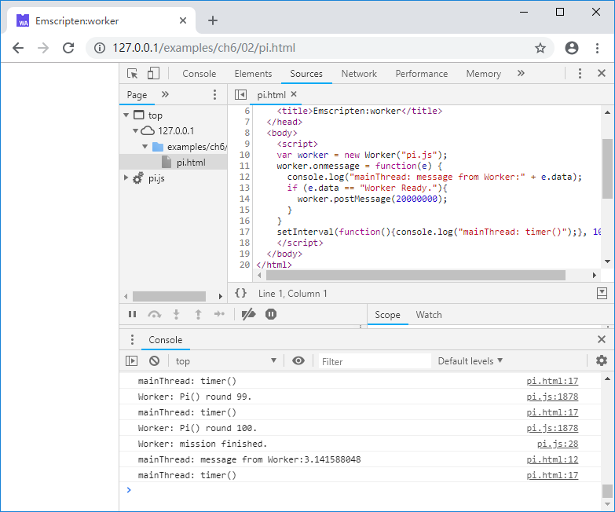

6.2 在Worker中使用Emscripten
本节将展示一个使用Emscripten及Worker的并发执行的例子。
先来看C部分的代码：
//pi.cc
double Rondom()
{
static int seed = 1;
static int const a = 16807, m = 2147483647, q = 127773, r = 2836;
seed = a * (seed % q) - r * (seed / q);
if (seed < 0) seed += m;
return (double)seed / (double)m;
}
EM_PORT_API(double) Pi(int trials)
{
double sum = 0.0;
for (int j = 0; j < 100; j++)
{
int hits = 0;
for (int i = 0; i < trials; i++)
{
double x = Rondom();
double y = Rondom();
if (x * x + y * y < 1.0)
hits++;
}
sum += 4.0 * hits / trials;
printf("Worker: Pi() round %d.\n", j + 1);
}
return sum / 100.0f;
}
C代码导出了Pi()函数，该函数使用概率法计算圆周率，函数的输入参数为每轮抛骰子的次数，函数内部将重复100轮，每轮计算结束时都将输出轮数信息。
在编译之前，我们额外准备一个pre.js文件（该文件将被插入emcc生成的js文件之前），代码如下：
//pre.js
Module = {};
Module.onRuntimeInitialized = function() {
postMessage("Worker Ready.");
}
onmessage = function(e){
console.log("Worker: message from mainThread:" + e.data);
console.log("Worker: mission start.");
var p = Module._Pi(e.data);
postMessage(p);
console.log("Worker: mission finished.");
}
pre.js中定义了onmessage()回调函数用于处理来自主线程的消息。在本例中，onmessage()函数将根据主线程传来的参数计算圆周率，并将计算结果通过postMessage()方法发送回主线程。另外，即使在Worker中，Module的编译和初始化仍然是异步的，Worker加载完js文件并不意味着Module运行时可用，因此仍然需要采取某种通知机制，确保Worker在开始调用Module前Module已经初始化完成。在本例中，我们仍然采用的是设置Module.onRuntimeInitialized回调的方法来通知主线程Module准备完毕的消息。
使用以下命令编译：
emcc pi.cc --pre-js pre.js -o pi.js
主线程（既网页部分）的代码如下：
//pi.html
var worker = new Worker("pi.js");
worker.onmessage = function(e) {
console.log("mainThread: message from Worker:" + e.data);
if (e.data == "Worker Ready."){
worker.postMessage(20000000);
}
}
setInterval(function(){console.log("mainThread: timer()");}, 1000);
这部分很简单，当收到"Worker Ready."确认Worker中的Module准备完毕后，发送任务参数2000000给Worker计算圆周率。
浏览页面，控制台将输出：

若此时打开CPU资源监视器，可以看到一个CPU核心由于Worker中执行的运算，处于满负荷状态；主线程并未阻塞仍然在定时输出timer日志，1~2分钟后，Worker执行完成，将传回圆周率结果：
